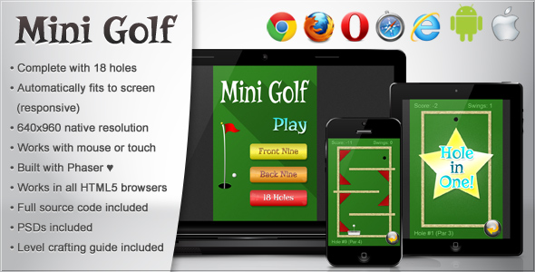

Quick Start Assets Javascript Configuration Level Crafting Guide Support

Thank you for purchasing Mini Golf!
An easy to play HTML5 mini golf game. Includes all 18 holes, and a level crafting guide.
Keeps track of your personal best score for each game type (Front nine, Back Nine, and Full Course (18 Holes)).
This game is ready to go. Simply drop this folder ("mini_golf") onto a server, and browse to it!
For example, if you have a "games" directory on your site, and upload the "mini_golf" folder there, you'd play it at:
http://www.example.com/games/mini_golf
Note: Sometimes trying to run HTML5 games from a local source (i.e., just opening the index.html file from your desktop) will not work properly, as browsers lock out some features for security purposes.
Fonts
The title font used for this game is called "Risque", and is commercial use friendly:
The in-game font for score, swings, etc. is defined as: Arial, "Helvetica Neue", Helvetica, sans-serif
(You can change this if you wish by editing the t_font variable in /js/Game.js)
Images / Sprites
Game screen images, buttons, and other misc. images are located in the /img folder.
The game sprites (ball, putter, obstacles) are located in the /img/sprites folder.
The score display images (Hole in One, Birdie, Par, etc.) located in the /img/score_text folder.
The PSD files for all images are located in the /img/_PSD folder
Sound / Audio
All of the game sound effects are located in the /audio folder.
Both .mp3 and .ogg files are required for cross-browser compatibility.
This game uses the Phaser HTML5 Game Framework. It's a solid and actively developed HTML5 game framework that has a virbrant and excited community behind it. The frosting on the cake is that it's open source, and the cherry on top is that is uses the MIT license.
Feel free to research this framework at: http://phaser.io
Here is the Phaser documentation & examples (in case you're interested): http://docs.phaser.io/ & http://examples.phaser.io/
All of the Javascript files are located in the /js folder.
Phaser Framework
Both of these files are required for the game to run. They should be left alone.
Game Files
jQuery
I've found it's good practice to have this library available. It's only used here to launch the game once the DOM has been loaded. If you'd like to remove it, and don't know how, please feel free to contact me (see Support section).
It took quite a bit of tweaking to get the gameplay and physics working just right. Therefore, besides swapping graphics out, there isn't much to be offered in terms of configuration (except, crafting your own levels (see the next section!)).
There are just a few configuration variables located at the top of the Game.js file.
It looks like this:
///////////////////////////////////////////////////////////////////////
// CONFIGS
par = [3, 4, 4, 5, 3, 5, 4, 5, 4, 3, 4, 5, 3, 4, 5, 3, 4, 5];
holeCount = 18;
if (gameType < 3) {
holeCount = 9;
}
// If true, the setup putter will always appear in the same place,
// otherwise it will always be near the ball.
putterSetupSamePosition = false;
// Obstacle Motion Speed Settings
obRotateSpeed = 15;
obMoveSpeed = 60;
The par array sets the par for each hole.
The holeCount variable sets how many holes there are to be played (i.e., 18 for the full course, or 9 if the Front Nine or Back Nine options are selected).
putterSetupSamePosition set to true will reload the putter near the bottom of the screen at each setup. Otherwise (as currently false) will reload near the ball (I've personally found this to be much better, but left the option available).
The obstacle speed settings dictate how fast the moving obstacles move.
And now for the fun part! How to make your own levels! (I know they're actually called "holes", but to avoid confusion, I'll just be referring to them as "levels"...)
Most of the work will be done in Game.js. If you want to get fancy, you'll be creating new obstacle graphics and physics polygons as well. And if you want to get really fancy, well, you probably don't need this guide...
The first thing I'd like to mention is debug mode. Turning it on will overlay the physics collision polygons/circles, and show some debug text. The debug text can be helpful for obstacle placement. Simply set the debugging var (in Game.js, line 187) to true.
Starting simple... if you just want to change the par setting for a level, you can do that in the par array in the CONFIGS section at the top of Game.js.
The level settings are located just under the CONFIGS area. It looks like this:
// Hole (level) Data
// Set hole and ball initial positions
// Set construct methods for each level (destruct is handled automatically as long as all
// obstacles are included in the "ob" array).
holes = {
'h1': {
'holeX': 320,
'holeY': 140,
'ballX': 320,
'ballY': 780,
'construct': null
},
'h2': {
'holeX': 320,
'holeY': 140,
'ballX': 320,
'ballY': 780,
'construct': this.c2
},
'h3': {
'holeX': 320,
'holeY': 140,
'ballX': 320,
'ballY': 780,
'construct': this.c3
},
'h4': {
'holeX': 320,
'holeY': 140,
'ballX': 320,
'ballY': 780,
'construct': this.c4
},
'h5': {
'holeX': 514,
'holeY': 740,
'ballX': 120,
'ballY': 740,
'construct': this.c5
},
'h6': {
'holeX': 320,
'holeY': 140,
'ballX': 320,
'ballY': 780,
'construct': this.c6
},
'h7': {
'holeX': 320,
'holeY': 480,
'ballX': 320,
'ballY': 780,
'construct': this.c7
},
'h8': {
'holeX': 320,
'holeY': 140,
'ballX': 320,
'ballY': 780,
'construct': this.c8
},
'h9': {
'holeX': 500,
'holeY': 182,
'ballX': 230,
'ballY': 780,
'construct': this.c9
},
'h10': {
'holeX': 500,
'holeY': 145,
'ballX': 140,
'ballY': 815,
'construct': null
},
'h11': {
'holeX': 320,
'holeY': 140,
'ballX': 320,
'ballY': 780,
'construct': this.c11
},
'h12': {
'holeX': 320,
'holeY': 140,
'ballX': 320,
'ballY': 780,
'construct': this.c12
},
'h13': {
'holeX': 320,
'holeY': 140,
'ballX': 320,
'ballY': 780,
'construct': this.c13
},
'h14': {
'holeX': 384,
'holeY': 140,
'ballX': 320,
'ballY': 780,
'construct': this.c14
},
'h15': {
'holeX': 320,
'holeY': 200,
'ballX': 320,
'ballY': 780,
'construct': this.c15
},
'h16': {
'holeX': 320,
'holeY': 140,
'ballX': 320,
'ballY': 780,
'construct': this.c16
},
'h17': {
'holeX': 320,
'holeY': 140,
'ballX': 320,
'ballY': 780,
'construct': this.c17
},
'h18': {
'holeX': 275,
'holeY': 135,
'ballX': 320,
'ballY': 820,
'construct': this.c18
}
};
This data contains the locations of the ball and hole, and the level "construct" (we'll go over that in a bit). You can choose to omit a contruct by setting this to null (see levels 1 and 10).
Building levels with the included obstacles is fairly easy. Take a look at Game.js, around line 722. You should see the level constructors header, followed by all the level constructors.
Here's the level 2 construct:
c2: function() {
this.addOb('bar_long', centerX, centerY, 'rotateCW');
},
Yep, that's it. Puts a rotating long bar in the middle of the level. Refer to the other level constructors to get ideas, or to see how they work.
Let's go over the "this.addOb" method.
It takes three required parameters, and two optional ones:
For testing your levels, you could either just use the level 1 slot data for temporary building, or add a temporary line of code in Game.js right above the "Init Starting Hole" comment (line 291) to force load the level you're working on. Example:
// Working on level 6
level = 5;
// Init Starting Hole
this.nextHole();
If you want to build your own obstacles, you'll need to do four things:
After that, you can call them like the other obstacles. building the poly.json data can be a bit simpler by using a tool, such as PhysicsEditor
If you have any questions or comments about the game, please let me know.
You can contact me through my Envato profile (send a message).
Or, send me a message from my website contact page.
Thank you again for purchasing Mini Golf! Enjoy!
-Bitwise Creative